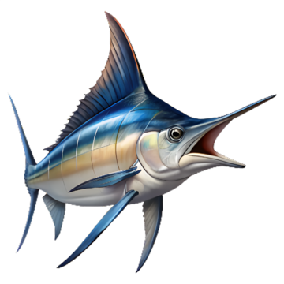
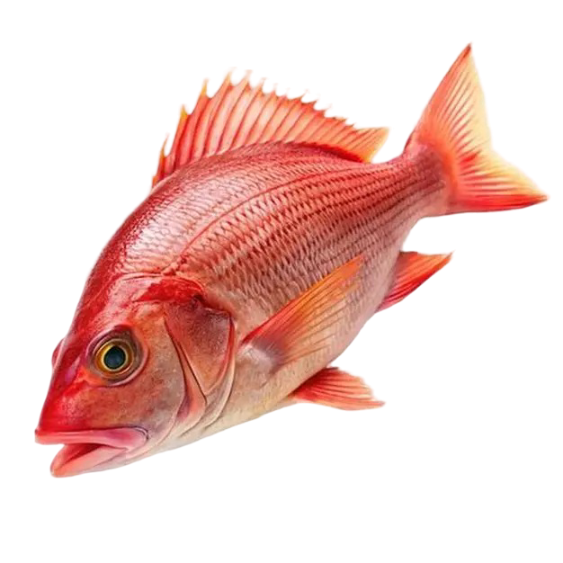

Pez Vela
Informacion del pez: El pez vela es un depredador marino extremadamente rápido, reconocido por su aleta dorsal en forma de vela y su capacidad de alcanzar hasta 119 km/h.
🌊 Hábitat: Mar abierto y zonas costeras
🎣 Alimentación: Peces pequeños y calamares
🕒 Mejor pesca: Mañana y tarde
📍 Zona: Aguas tropicales

Dorado
🌊 Hábitat: Aguas cálidas y mar abierto
🎣 Alimentación: Peces pequeños y crustáceos
🕒 Mejor pesca: Amanecer
📍 Zona: Zonas tropicales

Atún
🌊 Hábitat: Mar abierto
🎣 Alimentación: Peces pequeños
🕒 Mejor pesca: Mañana
📍 Zona: Aguas profundas

Marlin Azul
🌊 Hábitat: Aguas profundas
🎣 Alimentación: Peces y calamares
🕒 Mejor pesca: Amanecer
📍 Zona: Océano abierto

Róbalo
🌊 Hábitat: Esteros, manglares y costas
🎣 Alimentación: Camarones y peces pequeños
🕒 Mejor pesca: Amanecer y atardecer
📍 Zona: Zonas costeras

Pargo Rojo
🌊 Hábitat: Zonas rocosas y arrecifes
🎣 Alimentación: Camarones y peces pequeños
🕒 Mejor pesca: Tarde y noche
📍 Zona: Fondos rocosos

Pez Gallo
🌊 Hábitat: Playas y zonas costeras
🎣 Alimentación: Peces pequeños
🕒 Mejor pesca: Amanecer
📍 Zona: Costas arenosas